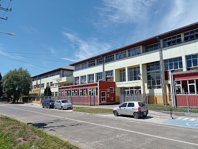

Nosotros
Un escudo con cuatro sentidos, un liceo con un solo propósito
El libro, el matraz, el tubo de ensayo y el arroba de nuestro escudo no son solo un dibujo: son las cuatro áreas donde formamos a nuestros estudiantes cada día. Pasa el cursor —o toca— cada símbolo para conocerlo.
Liceo Bicentenario Gabriela Mistral nace en 1950 con un mandato claro: que la educación técnica y la educación humanista no compitan, sino que se formen juntas. Llevamos el nombre de nuestra Premio Nobel como recordatorio de que un oficio se ejerce mejor cuando también se piensa y se escribe bien.
Hoy somos un establecimiento técnico-profesional reconocido en la comuna, con especialidades que preparan a los estudiantes tanto para el mundo laboral como para la educación superior.
Admisión y matrícula
Cuatro pasos para matricular a tu hijo o hija
El proceso de admisión se hace en línea y de forma presencial. Toca cada paso para ver el detalle — el paso activo queda marcado en tu recorrido.
Completa el formulario de postulación del Sistema de Admisión Escolar (SAE) en las fechas oficiales del proceso.
Consulta el resultado de la asignación en la plataforma del SAE y también en nuestro liceo.
Certificado de nacimiento, informe de notas y ficha de salud del estudiante.
Firma la matrícula en secretaría dentro del plazo indicado y elige especialidad.
Normas y Deberes
Convivencia y compromiso: así nos cuidamos entre todos
Estas son las normas básicas de convivencia del liceo. El detalle completo está en el Reglamento Interno de Convivencia Escolar, disponible en secretaría y para descarga.
Derechos del estudiante
- Recibir una educación de calidad, en un ambiente seguro y de respeto.
- Ser escuchado y participar en la vida escolar del liceo.
- Acceder a apoyo pedagógico y psicosocial cuando lo necesite.
- No ser discriminado por ningún motivo.
Deberes del estudiante
- Asistir a clases con puntualidad y cumplir con sus tareas y evaluaciones.
- Tratar con respeto a compañeros, docentes, asistentes y directivos.
- Cuidar la infraestructura, el mobiliario y los materiales del liceo.
- Contribuir a un ambiente de sana convivencia dentro y fuera del aula.
Presentación personal
- Uso del uniforme oficial o buzo institucional, según corresponda al día.
- Presentación personal limpia y ordenada.
- Uso de delantal o cotona en enseñanza básica, según normativa interna.
Asistencia y puntualidad
- Asistencia mínima requerida según normativa del Ministerio de Educación.
- Atrasos y ausencias deben justificarse en inspectoría con el apoderado.
- Retiros durante la jornada solo con autorización del apoderado.
Uso de tecnología
- Celulares y dispositivos personales en modo silencioso durante la clase.
- Uso de tecnología dentro del aula solo con autorización del docente.
- Prohibido grabar o difundir imágenes de terceros sin su consentimiento.
Faltas y sanciones
- Leves: atrasos, incumplimiento de tareas — se registran y se conversan con el estudiante.
- Graves: faltas de respeto, incumplimiento reiterado — se cita al apoderado.
- Gravísimas: violencia, acoso o daño a terceros — según protocolo de convivencia escolar.
Un lugar seguro para después de clases
Sabemos que no todos los apoderados y apoderadas pueden llegar a retirar a sus hijos e hijas apenas suena la campana de las últimas clases. Muchas familias de Máfil trabajan hasta media tarde, viven a cierta distancia del liceo o simplemente no cuentan con alguien que pueda hacerse cargo del cuidado en esas horas intermedias entre el término de la jornada escolar y el regreso a casa. Para responder a esa realidad nace After School: el espacio del liceo pensado especialmente para los estudiantes más pequeños, de los cursos con salida más temprana, cuyos padres y madres siguen en su jornada laboral.
Más que un lugar donde simplemente "esperar", After School es un programa educativo, sin fines de lucro y con una finalidad pedagógica declarada: acompañar, contener y seguir aportando al desarrollo de los niños y niñas incluso después del horario formal de clases. No se trata de una guardería ni de una sala de espera — cada actividad que se realiza dentro del programa responde a un propósito formativo, pensado y ejecutado por estudiantes del Área Técnico-Profesional de Atención de Párvulos, bajo la supervisión constante de una profesional de educación parvularia.
- Un espacio tranquilo y acompañado para terminar las tareas y trabajos pendientes del día, con apoyo cercano cuando los niños y niñas lo necesitan, respetando siempre su propio ritmo.
- Momentos de juego libre, actividades recreativas y rincones temáticos —de arte, de cuentos, de juegos de mesa— pensados para que el después de clases también sea un tiempo de disfrute y aprendizaje.
- Un lugar seguro y contenido donde esperar tranquilos hasta que el apoderado o apoderada pueda venir a retirarlos, sin apuro ni sensación de estar "de más" en el liceo.
- Siempre a cargo de un adulto responsable del establecimiento, con supervisión permanente y protocolos claros de cuidado, ingreso y salida de los estudiantes.
Cada ícono representa una de las actividades que se viven día a día en After School.

El liceo, sede de este programaLo que incluye cada sesión
- ✓ Apoyo con tareas y trabajos pendientes
- ✓ Juego libre y actividades recreativas
- ✓ Merienda y espacio de descanso
- ✓ Entrega segura a los apoderados
Equipo a cargo del programa
Quiénes acompañan a los niños y niñas durante cada sesión de After School.
Avisos After School
Avisos y novedades del programa
Cambios de horario, actividades especiales y avisos puntuales del espacio After School (distintos de las noticias generales del liceo).
Galería After School
Así se ve un día en After School
Contacto After School
Escríbenos por el programa After School
Para consultas específicas del programa —admisión, horarios o el contrato-compromiso— puedes contactar directamente a la encargada.
¿Tienes una consulta sobre After School?
Completa el formulario en una página aparte y la encargada te responderá a la brevedad.
Ir al formulario de After School ↗Galería del Liceo
La vida diaria del liceo
Un vistazo a las salas, talleres y actividades generales del establecimiento. Toca una imagen para verla en grande. (Fotos de ejemplo — súbelas cuando tengas las reales.)
Noticias
Novedades del liceo
Lo último del establecimiento y lo que compartimos en redes: actividades, reconocimientos y avisos importantes.
Síguenos
Todo lo que pasa en el liceo, también en tus redes
Fotos del día a día, actividades, reconocimientos de nuestros estudiantes y avisos urgentes — síguenos para no perderte nada.
Agenda
Calendario de eventos
Contacto
Escríbenos o pasa por secretaría
¿Tienes una consulta?
Completa el formulario de contacto en una página aparte y te responderemos a la brevedad.
Ir al formulario de contacto ↗